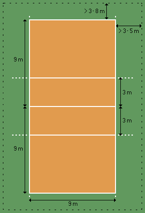

Odbojka je timska (kolektivna) igra u kojoj se dve ekipe od po šest igrača bore na terenu dimenzija 18x9 metara. Po sredini igrališta razapeta je mreža široka 1 metar i duga 9,5 metara. Razmak između gornjeg ruba mreže i tla je različit: 243 cm za seniore i 224 cm za seniorke.
Igralište je središnjom linijom podeljeno na dva polja; na 3 metra od nje teku sa strane paralelne linije koje označavaju zonu napada, a iza njih zonu odbrane.
Prostor za serviranje je iza zadnje linije i može se slobodno servirati s bilo kojeg mesta duž linije.
Početni udarac (servis) izvodi desni igrač poslednje linije, nastojeći da prebaci loptu u protivničko polje. Ako je servis izveden nepravilno ili ako je protivnik u toku nadigravanja bio uspešniji, protivnik stiče pravo serviranja.
Ekipa sme loptu taknuti tri puta u jednom poenu, a isti igrač ne sme odigrati loptu dvaput uzastopce, osim ako je prethodno izblokirao protivničkog igrača, u kom slučaju se lopta može dodirnuti 4 puta (blok i 3 lopte).
Lopta ostaje u igri dok ne dodirne teren, zid ili neki predmet, odnosno dok neko od igrača ne napravi grešku.
Godine 2000. donesena su nova pravila bodovanja u odbojci. Prema novim pravilima poeni se osvajaju posle svake završene akcije, bez obzira na to koja ekipa je servirala. Prema nekadašnjim pravilima, samo ona ekipa koja je servirala je mogla osvojiti poen.
Utakmice se igraju na tri dobijena seta od po 25 poena, a najviše se može odigrati pet setova. Za razliku od prva četiri seta, peti (koji se još zove i taj-brejk) se igra do 15 poena. U slučaju izjednačenog rezultata krajem seta, pobedniku su potrebna dva poena razlike da bi završio set u svoju korist.
Tokom igre svih šest igrača se u polju rotiraju u smeru kazaljke na satu, nakon osvojenog servisa. To je glavni ključ dvoranske odbojke - ne može se sve vreme igrati s najboljim napadačima na mreži ili najboljim obrambenim igračima u pozadini.
Pre servisa igrači moraju biti na mestima koje im redom pripada, a nakon servisa mogu zameniti mesta, ali igrači iz odbrane ne smeju menjati igrače na mreži. Oni takođe smeju učestvovati u napadu, ali mogu smečirati samo iza napadačke linije (linije tri metra). Pravilo rotiranja objašnjava zašto tehničar ponekad izgleda kao da se „skriva“ iza igrača. Pre servisa, kao i ostali, i on mora biti na svom mestu, a nakon servisa može trčati na mrežu kako bi organizovao napad. Ako dotrči na mrežu pre nego što je protivnik odservisirao, poen se daje protivniku.